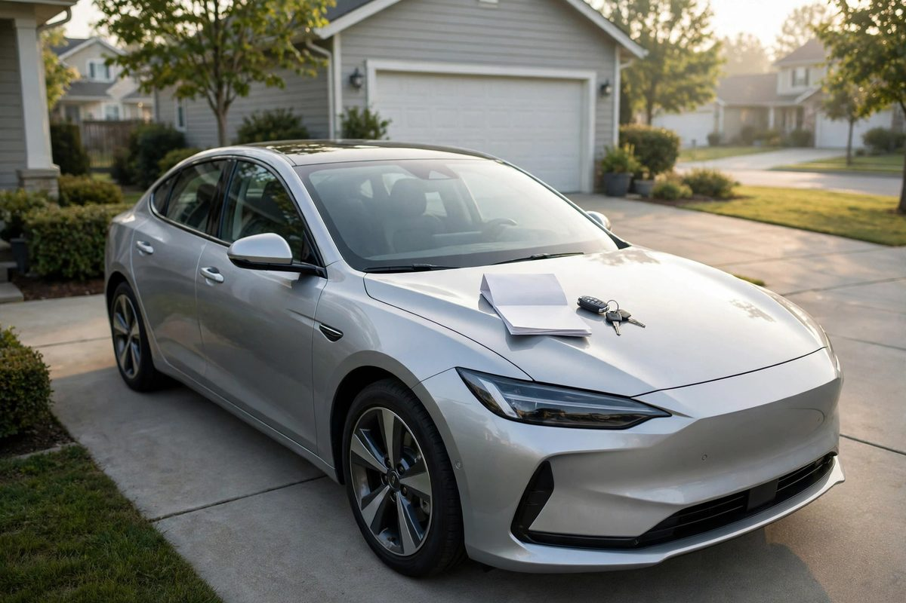

Home › Blog › How to Calculate Car Insurance
How to Calculate Car Insurance

Car insurance can feel like a mystery number. You fill in a form, and a price comes back — but where does it come from, and how do you know if it is fair? The price is not random: insurers build it from a short list of facts about you, your car and the cover you choose.
This guide shows you how to calculate car insurance: what the price is made of, how to work out what you should pay, and how to compare quotes for the right cover at a fair price.
What Is Car Insurance?
Car insurance is a contract between you and an insurance company. You pay a regular amount, called a premium, and in return the insurer agrees to pay for certain losses — for example, damage to someone else’s car if you cause a crash, or repairs to your own car. You usually pay the premium monthly or every six months.
Almost every US state requires drivers to carry at least liability insurance, which covers damage and injuries you cause to other people. Driving without the required cover can mean fines, a suspended licence, and paying out of your own pocket if you cause a crash.
Two words come up in every policy. A deductible is the amount you pay yourself before the insurer starts paying on a claim — for example, on a $2,000 repair bill with a $500 deductible, you pay $500 and the insurer pays $1,500. A coverage limit is the most the insurer will pay for one claim: a policy written as 25/50/25 means up to $25,000 for one person’s injuries, up to $50,000 for all injuries in one accident, and up to $25,000 for property damage.
The Main Types of Car Insurance Coverage
A car insurance policy is a bundle of different coverages, each priced on its own. Every coverage you add — and every limit you raise — changes the total.
Liability coverage
Liability coverage pays for injuries and damage you cause to other people in a crash — their medical bills, their car repairs, and your legal costs if they take you to court. It does not pay for your own car or your own injuries. This is the coverage nearly every state requires.
Collision coverage
Collision coverage pays to repair your own car after a crash, no matter who caused it, after you pay your deductible. If you have a car loan or a lease, your lender will almost always require it.
Comprehensive coverage
Comprehensive coverage pays for damage to your car that is not caused by a crash: theft, fire, flood, hail, vandalism, a broken windscreen, or hitting an animal. It also comes with a deductible, and lenders usually require it on financed cars. Together, collision and comprehensive are often called “full coverage” when bought with liability.
Uninsured and underinsured motorist coverage
This coverage protects you if the other driver has no insurance, or not enough to pay for your injuries and damage. Some states require it.
Personal injury protection and medical payments
Personal injury protection (PIP) and medical payments coverage pay medical bills for you and your passengers after a crash, no matter who caused it. PIP is required in no-fault states.
How Insurers Calculate Your Premium
There is no single formula for car insurance the way there is for a loan payment. Instead, each insurer estimates two things: how likely you are to make a claim, and how much that claim is likely to cost.
Your age and driving experience
Young and new drivers usually pay more, because less experience means a higher chance of a crash. Teenagers pay the most. Prices generally fall as you gain experience and build a clean record.
Your driving record
Accidents, speeding tickets and other moving violations push your price up, and a serious offence such as drink-driving pushes it up a lot. A clean record is one of the strongest ways to keep your premium down.
Where you live
City drivers usually pay more than drivers in small towns or rural areas, because busy areas have more crashes, more theft and vandalism, and higher repair and medical costs.
The car you drive
The cost of your car is a major factor in the price to insure it. Insurers also look at the car’s safety record, how often that model is stolen, and how much its parts cost.
How much you drive
The more miles you drive, the more chance of a crash. A long daily commute costs more to insure than a car used only for short trips and weekends.
The coverage you choose
Your limits, your deductible and the types of cover you pick all move the price. Higher liability limits cost more, and a lower deductible costs more each month. Adding collision and comprehensive costs more than liability alone.
Your credit-based insurance score
In most US states, insurers use a credit-based insurance score, built from your credit history, to help predict how likely you are to file a claim. A few states, including California, Hawaii and Massachusetts, do not allow insurers to use credit information when pricing car insurance.
The Insurance Information Institute lists these same factors in its guide to what determines the price of an auto insurance policy.
How to Calculate Car Insurance in 4 Steps
You cannot work out your exact premium with a pocket calculator, because each insurer weighs the factors above a little differently. But you can work out a reliable estimate and compare real quotes in about half an hour.
Step 1 — Decide what coverage you need
Start with your state’s minimum liability limits, then ask whether that is enough for you. If you own a home or have savings, higher limits are usually worth it, because a serious crash can cost far more than the minimum. If your car is financed or leased, add collision and comprehensive — your lender will require them anyway.
Step 2 — Gather your details
Have these facts ready: your car’s year, make and model, your address, how many miles you drive in a year, your driving record, and the drivers in your household. You will also need to pick a deductible — $500 and $1,000 are the most common choices.
Step 3 — Get an estimate and compare quotes
Use our car insurance calculator to get a quick estimate from your age, car value, state, annual miles, coverage and driving record. Then get real quotes from at least three insurers using the exact same details — the differences can be large, because each company weighs the same facts differently.
Step 4 — Compare the quotes like for like
Only compare quotes that have the same coverage limits, the same deductible and the same drivers. A quote that looks cheap may simply have lower limits or a higher deductible. Check what each quote includes — roadside assistance and rental car cover are often optional extras — and check the insurer’s reputation for paying claims, not just its price.
Example: How Your Choices Change the Price
The table below shows how the same driver’s monthly price changes as the coverage changes. These are example figures, shown only to explain the pattern — your own quotes will be different.
| Coverage choice | Example monthly price | What changes |
|---|---|---|
| Liability only, state minimum | $85 | Cheapest; covers others only |
| Liability + collision + comprehensive ($500 deductible) | $145 | Your own car is covered too |
| Same full cover, $1,000 deductible | $125 | Cheaper monthly, more if you claim |
| Full cover + roadside help and rental car cover | $155 | Help when your car breaks down |
Adding cover for your own car is the biggest jump in price — the gap between $85 and $145. Raising the deductible from $500 to $1,000 cuts the monthly price by about $20 in this example, but you would pay $500 more out of your own pocket on a claim.
How to Lower Your Car Insurance
If your quote is higher than you expected, try these steps:
- Raise your deductible — from $500 to $1,000, but only if you could afford the higher amount from your savings after a crash.
- Ask about discounts — safe driver, good student, bundling car insurance with home or renters insurance, anti-theft devices, low mileage, and paying in full instead of monthly.
- Shop around at every renewal — get three fresh quotes; your current insurer’s price is not always the best one any more.
- Drop collision and comprehensive on an old car — if your car is worth little, the cover can cost more over a year than the car is worth.
- Keep a clean driving record — avoiding tickets and crashes is the cheapest discount of all, and it grows over time.
- Review your cover once a year — your car loses value and your needs change. The Wisconsin Office of the Commissioner of Insurance’s Consumer’s Guide to Auto Insurance is a useful checklist for that yearly review.
Common Mistakes to Avoid
Buying only the state minimum liability cover can leave you paying thousands out of your own pocket after a serious crash, because the minimum is often far below the real cost of an accident. Comparing quotes with different limits or deductibles is another common error — the prices are not comparable unless the cover matches.
Forgetting to list every driver in your household is a third mistake: if someone who lives with you and drives your car is not on the policy, a claim can be denied. Letting your cover lapse, even for a few days, is a fourth — a gap in cover can raise your future prices. Finally, do not pick a policy on price alone: check how the insurer handles claims.
Frequently asked questions
How is car insurance calculated?
Insurers estimate how likely you are to make a claim and how much it might cost. They look at your age and experience, your driving record, where you live, the car you drive, your yearly mileage, the coverage you choose, your deductible, and — in most states — a credit-based insurance score. Each insurer weighs these factors differently, so quotes can vary.
How much car insurance do I need?
At minimum, you need the liability coverage your state requires — but that is only a floor. If you have savings, a home, or a newer car, higher liability limits are usually worth it, because a serious accident can cost far more than the state minimum. If you have a loan or a lease, your lender will almost always require collision and comprehensive coverage as well.
Does a higher deductible lower my car insurance premium?
Yes, in most cases. A higher deductible means you pay more out of your own pocket on a claim, so the insurer takes less risk and charges you less each month. Only raise it to an amount you could actually afford to pay after an accident.
How can I get cheaper car insurance?
Compare quotes from at least three insurers for the same coverage, ask about every discount you may qualify for, consider a higher deductible, and bundle your car insurance with home or renters insurance. Review your coverage once a year, because your car loses value and your needs change over time.
Does my credit score affect my car insurance?
In most US states, yes. Insurers use a credit-based insurance score, built from your credit history, to help predict how likely you are to file a claim — it is not the same as the credit score a lender checks. A few states, including California, Hawaii and Massachusetts, do not allow insurers to use credit information for car insurance pricing.